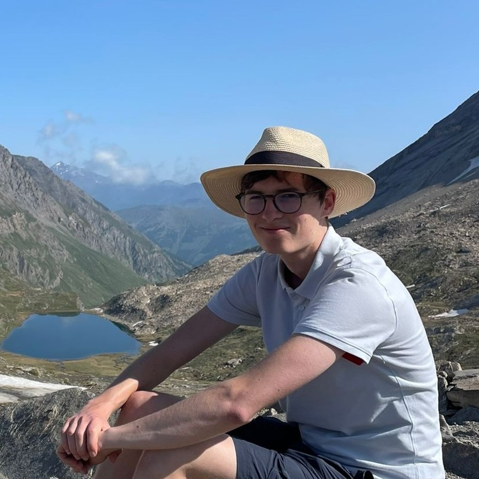
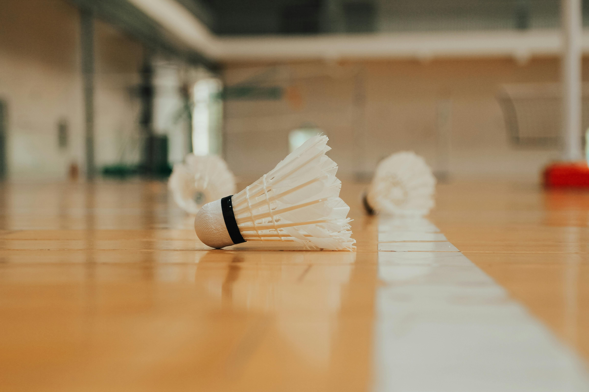
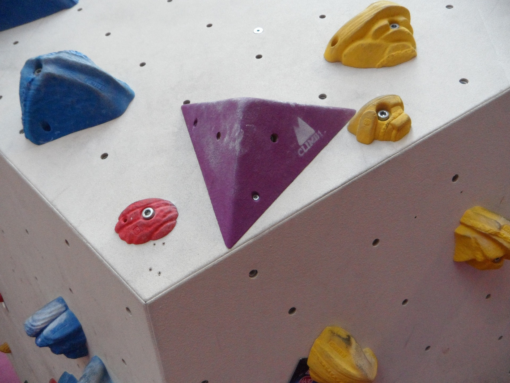
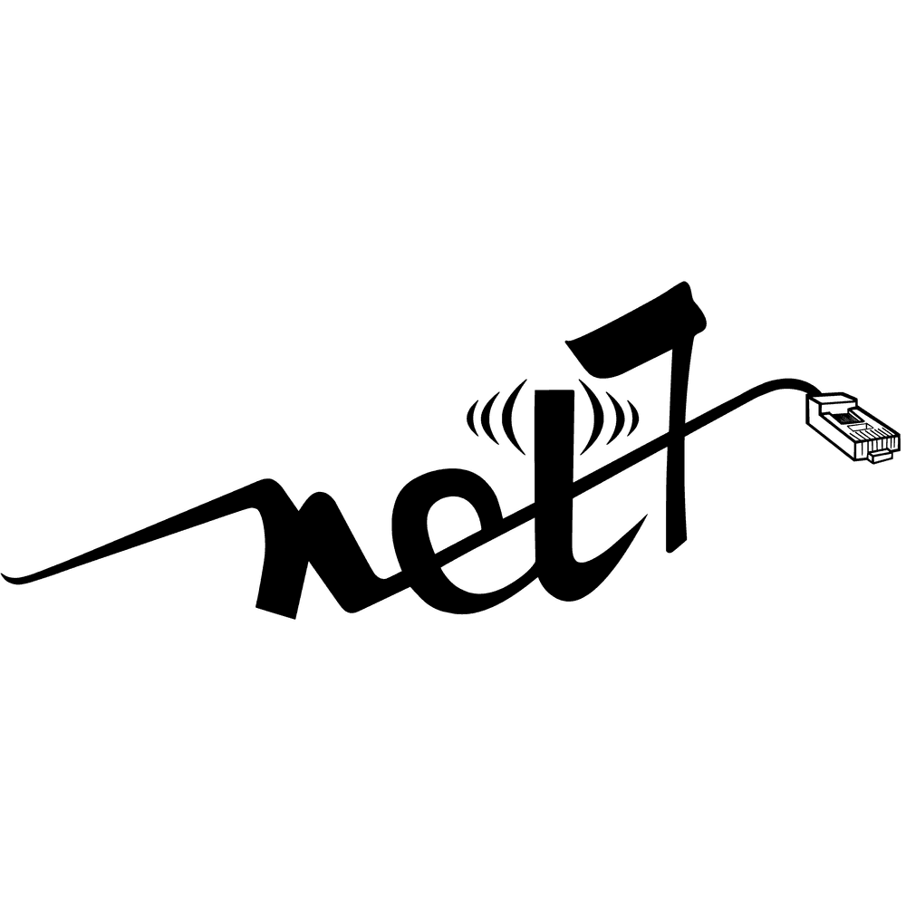
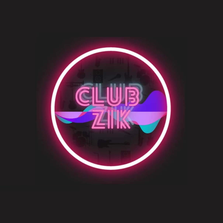
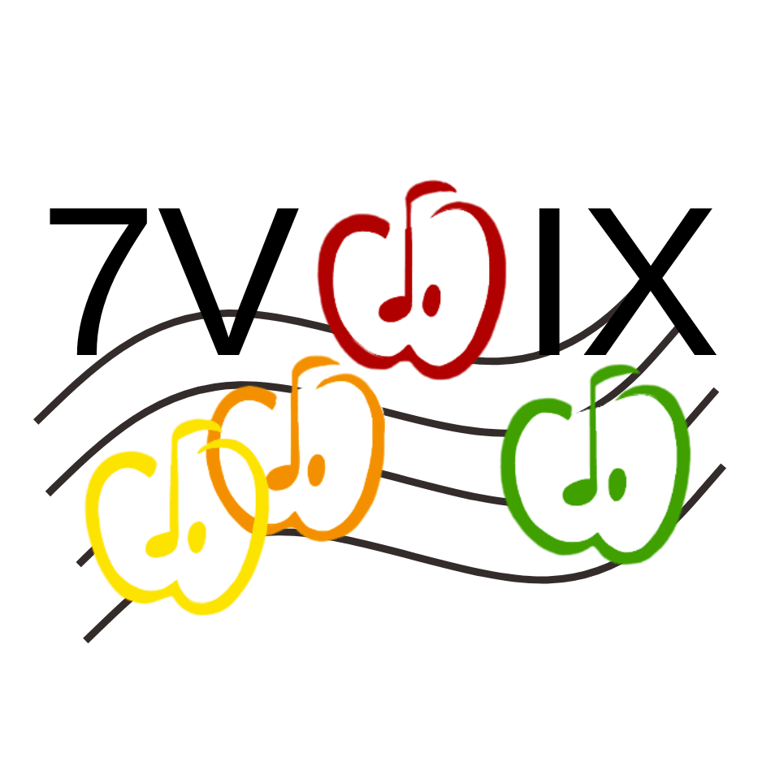
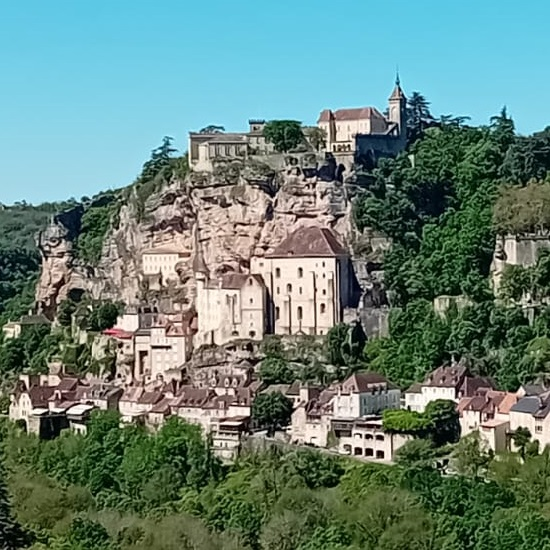
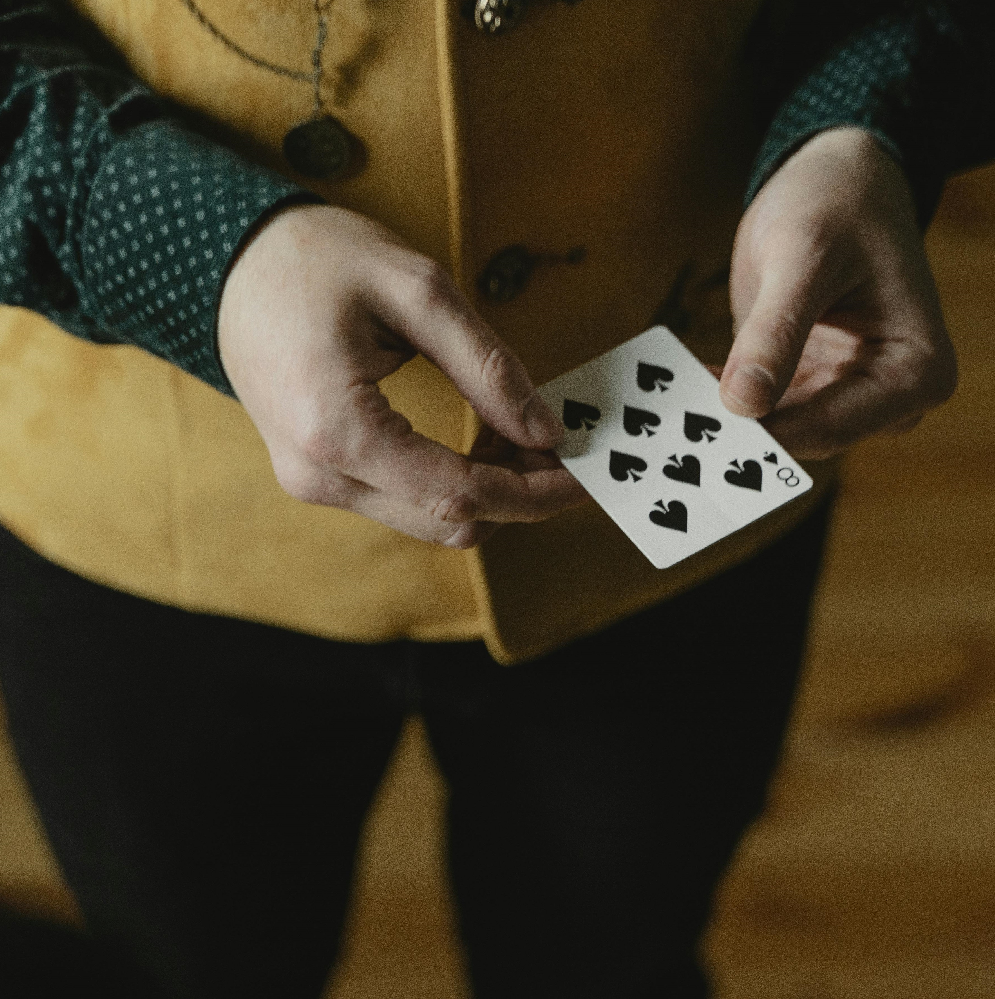

I am an engineering student at ENSEEIHT in Toulouse. I am in the Computer Science section of the school.

Hi ! I'm Tristan Moreau, a 21 years old engineering student in second year at N7 and specialized in Networks and Telecommunications.
I am interested in software development, cybersecurity as well as Artificial Intelligence.

At N7, I joined both the badminton club and the badminton competition group.

I am also bouldering with the physical education course.



In the school, I joined Net7, Japan7, Club'Zik and 7voix. They are respectively the school's Computer Science, Japan, Music and Singing association.


I really enjoy singing (mostly french songs), as well as walking and discovering new places. Moreover, I like card tricks, playing card games and coding on my computer.